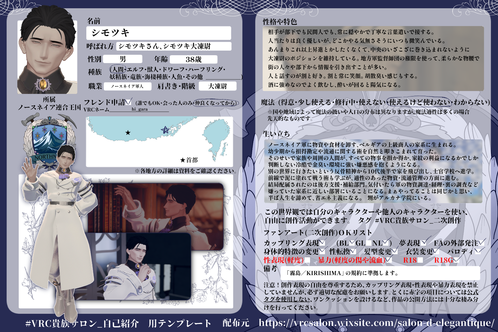

概要
ノースネイア軍に所属する軍人。相手が部下でも民間人でも、常に穏やかで丁寧な言葉遣いで接する。人当たりは良く優しいが、どこかやる気無さそうにいつも微笑んでいる。
性格・特色
人と話すのが割と好きで、割と常に笑顔。胡散臭いと感じさせる一面もある。酒に強いのでよく飲み、酔いが回ると陽気になる。あまりこれ以上昇進したくなく、中央のいざこざに巻き込まれないように現在のポジションを維持している。
生い立ち
ノースネイア軍に物資や食材を卸す、ベルギアの上級商人の家系に生まれる。幼少期から損得勘定や流通に関する術を自然と叩き込まれて育った。そのせいで、物事をすべて損得や家系の利益でしか判断しない冷酷で金臭い環境に強い嫌悪感を抱くようになる。別の世界に行きたいという反抗精神から10代後半で家を飛び出し、士官学校へ進学。前線で泥に塗れて戦う術も学ぶが、適性のあった物資・流通管理の方面に進む。結局配属されたのは後方支援・補給部門。軍の物資調達、経理、裏の調査などを担う部門にいることになる。半ば人生を諦めて、省エネ主義になる。
二次創作について
この世界観では、自分のキャラクターや他人のキャラクターを使い、自由に創作活動ができます。
- カップリング表現 / BL・GL・NL OK
- 夢表現 OK
- FAの外部発注 OK
- 身体的特徴の変更・性転換・髪型変更・衣装変更・パロディ OK
- 性表現・暴力表現・R18 / R18G CSの記載・規約を確認
改変元アバターの規約や、各キャラクターのCSに記載された注意事項に準拠して楽しんでください。
キャラクターシート
Character Sheet / Original Reference
